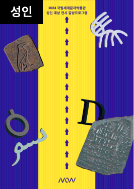
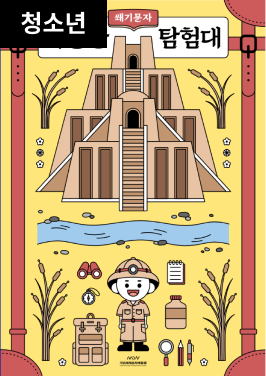
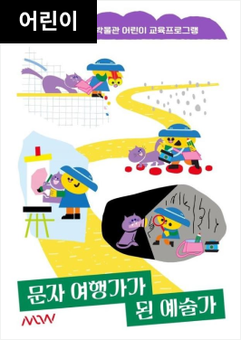
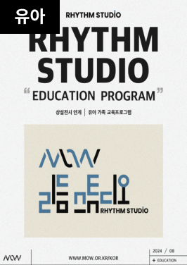

매주 월요일, 1월 1일, 설날과 추석 당일
월요일이 공휴일인 경우에는 월요일 당일 개관 후 다음날 평일 휴관합니다.
인천광역시 센트럴로 217(송도동 24-8) 국립세계문자박물관
진행중인 교육 보기

[성인 개인]MoW 딜라잇 트립
운영기간 2024-08-04 ~ 2027-08-18
접수기간 2024-08-04 ~ 2027-08-18
교육대상 성인
교육장소 박물관 학습실
성인
[성인 개인]MoW 딜라잇 트립
접수마감
온라인(선착순)

[청소년 단체 ]MoW 딜라잇 트립
운영기간 2024-08-04 ~ 2027-08-18
접수기간 2024-08-04 ~ 2027-08-18
교육대상 청소년
교육장소 박물관 학습실
청소년
[청소년 단체 ]MoW 딜라잇 트립
접수마감
온라인(선착순)

[초등단체]MoW ERE Program - 문자 여행가가 된 예술가
운영기간 2024-08-04 ~ 2027-08-18
접수기간 2024-08-04 ~ 2027-08-18
교육대상 어린이
교육장소 어린이 학습실
어린이
[초등단체]MoW ERE Program - 문자 여행가가 된 예술가
접수마감
온라인(선착순)

[유아 가족]MoW 리듬 스튜디오
운영기간 2024-08-04 ~ 2027-08-18
접수기간 2024-08-04 ~ 2027-08-18
교육대상 유아
교육장소 가족 학습실
유아
[유아 가족]MoW 리듬 스튜디오
접수마감
온라인(선착순)
NATIONAL MUSEUM OF WORLD WRITING SYSTEM
세계 문자연구의 산실, 국제 세계 문자 박물관
건축물 소개
국립세계문자박물관의 건축물 ‘Pages’는 문자가
쓰여지는 바탕을 의미하는 건축적 장치입니다.
페이지월(Page Wall)이라는 건축적 바탕을 통해
우리는 문자에 대한 이야기를 담고자 합니다.
MI 소개
모우 글자 상징은 국립세계문자박물관 상표의 조형적 특징과
상징성이 가장 잘 드러나는 주식별자로서 다양한 광고에서부터
인쇄 매체, 영상 매체, 사인 매체 등에 이르기까지
대내외적으로 표출하는 모든 시각 소통에 적용되어 국립세계문자박물관
상표의 이미지를 전달하는 대표적인 상징물입니다.
세계문자 연구
국립세계문자박물관은 문자 관련 학제간 관점의 소통으로
박물관의 정체성과 역할을 모색하고자 합니다.
문자 연구의 허브로서 다양한 세계 문자에 대한 학적 기능을 활성화하고
연구와 콘텐츠의 연계, 문자 기반 학제간 연구를 수행하는데 최선을 다하겠습니다.
MOW 온라인 콘텐츠
국립세계문자박물관은 VR과 유튜브 콘텐츠를 통해
박물관을 온라인으로 체험할 수 있는 다양한 프로그램을 제공합니다.
가상 현실 기술을 활용하여 박물관의 주요 전시품을 생생하게 감상할 수 있으며,
유튜브를 통해서는 전시 해설과 교육 자료를 접할 수 있습니다.
이를 통해 집에서도 쉽게 세계 문자의 역사와 문화를 탐험할 수 있습니다.